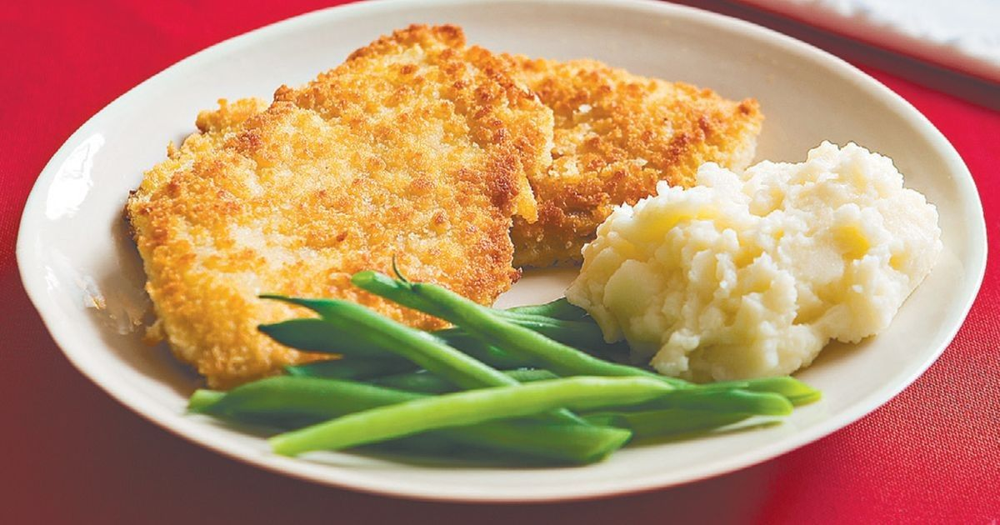

Chicken Schnitzel

Chicken Schnitzel
Ingredients
- panko breadcrumbs
- plain flour
- 2 eggs
- 2 large chicken breasts
- olive oil
Method
- slice chicken horizontally in half, try to get even thickness pieces
- fill 3 bowls with flour, beaten eggs, and breadcrumbs. Coat chicken in flour, shaking off excess. Dip in egg mixture. Coat in breadcrumb mixture. Place on a plate. Repeat with remaining chicken
- Heat oil in a frying pan over medium-high heat. Cook chicken, in batches, for 4 to 5 minutes each side or until golden and cooked through. Transfer to a plate lined with paper towel to drain. Serve.